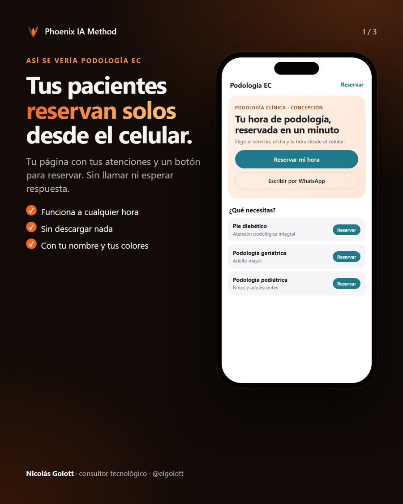
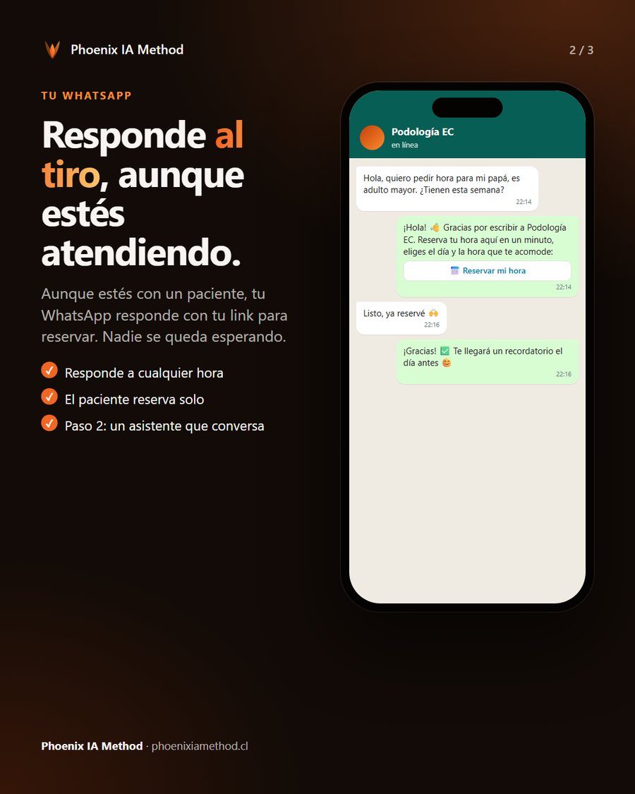
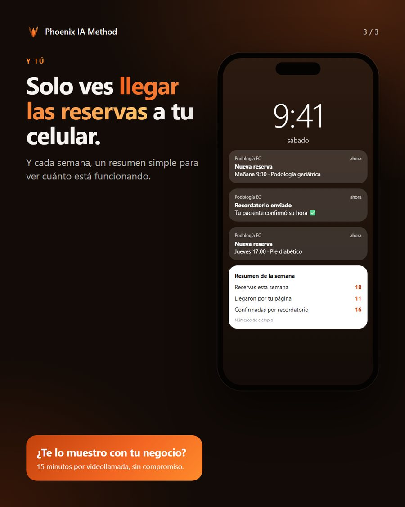

Podología clínica integral · Concepción centro
Lo armé solo con lo que Podología EC Clínica Integral publica en su página y en sus redes. Si algo no calza con cómo trabajan, lo ajustamos en la videollamada.
1 de 3 · Su página
Así se vería Podología EC Clínica Integral: eligen la atención, el día y la hora en un minuto, a cualquier hora y sin descargar nada.

2 de 3 · Su WhatsApp
El paciente que escribe de noche recibe al instante el link para reservar. Nadie se queda esperando ni se va con otro.

3 de 3 · Ustedes
Un aviso por cada reserva, el recordatorio sale solo y cada semana un resumen para ver cuánto está funcionando.

Imágenes de ejemplo hechas para Podología EC Clínica Integral. Los números del resumen son de ejemplo.
| Paso | Qué pasa | Cuándo |
|---|---|---|
| 1. Videollamada | 15 minutos para conocernos y ver cómo agendan hoy | Cuando les acomode |
| 2. Datos | Me pasan atenciones, duraciones y horarios | Día 1 |
| 3. Armado | Dejo la reserva en línea andando, los recordatorios y la ficha de Google con su botón | Días 2 a 7 |
| 4. Les enseño | 30 minutos por videollamada a quien maneja la agenda, con una guía de una página | Días 7 a 10 |
| 5. Primer mes acompañado | Revisamos juntos al final de la semana 1 y de la semana 2 | 30 días |
| 6. Revisión del mes | Les muestro cuántas reservas llegaron, de dónde y qué ajustamos | Día 30 |
Queda andando en 7 a 10 días hábiles desde que tenga sus datos. La verificación de la ficha la hace Google y puede tardar algunos días.
Todo lo que instalo se mide. Antes de partir tomamos la foto de cómo están hoy y cada mes vemos los mismos números:
| Número | Qué les dice |
|---|---|
| Reservas en línea al mes | Cuántos pacientes reservaron solos, sin escribir ni llamar |
| Confirmadas por recordatorio | Cuántas horas se salvaron de caerse |
| De dónde llegaron | Google Maps, su página, WhatsApp o Instagram: dónde conviene poner fuerza |
| Reservas fuera de horario | Pacientes que antes quedaban esperando respuesta |
Son metas, no promesas: dependen de cuánta gente busque y de sus reseñas. Lo que sí garantizo es lo que depende de mí: todo funcionando como lo acordamos, la capacitación y el acompañamiento. Si algo no funciona según esta propuesta, durante los primeros 30 días lo corrijo sin costo.
| Opción | Qué incluye | Implementación | Mensualidad |
|---|---|---|---|
| Clínica en piloto automático | Todo lo del recomendado + un asistente que conversa por WhatsApp, responde las preguntas de siempre y deja la hora tomada | desde $1.040.000USD 1.080 ref. | desde $104.000USD 108 ref. |
| Reborn PhoenixRecomendado | Reserva en línea + ficha de Google Maps con botón + aviso de cada reserva + recordatorio al paciente + WhatsApp que responde fuera de horario + QR + tablero + acompañamiento | $450.000USD 470 ref. | $45.000USD 47 ref. · desde el 2º mes |
| Diagnóstico Fénix | Informe escrito con el plan ordenado: qué hacer primero, qué se puede hacer gratis y qué conviene pagar | $90.000USD 90 ref. | — |
Los montos en USD son solo de referencia; se cobra en pesos. La herramienta de agenda (por ejemplo AgendaPro, desde $15.900 al mes) la pagan directo a la plataforma y queda a su nombre: los datos de sus pacientes son de ustedes. Antes de partir les confirmo el plan exacto según cuántos profesionales agendan. La ficha de Google Maps no tiene costo. El asistente que conversa es el paso 2: lo cotizo con su alcance real después de la videollamada.
Soy Nicolás Golott, consultor tecnológico. Con Phoenix IA Method ayudo a pymes de Chile a que sus clientes las encuentren y reserven solos, con herramientas simples y medibles. Atiendo por videollamada a todo Chile, y lo que hago con tecnología e IA lo muestro en Instagram (4.690 seguidores) y TikTok (6.688) como @elgolott.
Me gusta trabajar con negocios como Podología EC Clínica Integral: con buenas reseñas y pacientes contentos, donde lo que falta no es calidad, sino que reservar sea igual de fácil que atenderse.
Próximo paso
¿Lo conversamos 15 minutos por videollamada? Me responden este correo o me escriben al WhatsApp con el día y la hora que les acomode, y les muestro cómo funcionaría con Podología EC Clínica Integral.
Descargar esta propuesta en PDF
Nicolás Golott · Consultor tecnológico · Phoenix IA Method
contacto.nicolaspk@gmail.com · +56 9 2059 6120 · phoenixiamethod.cl